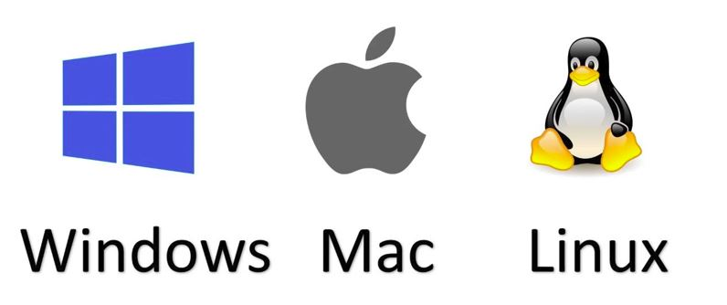
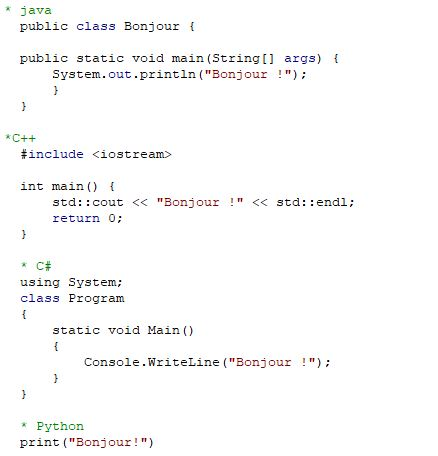
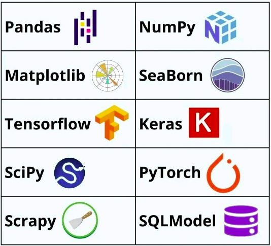
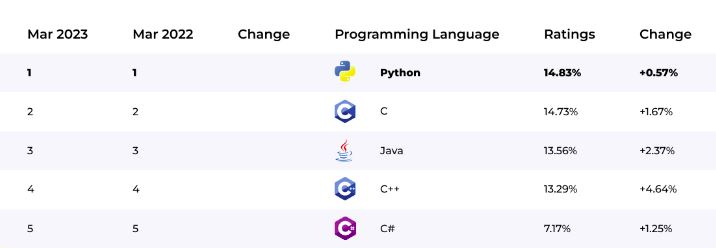
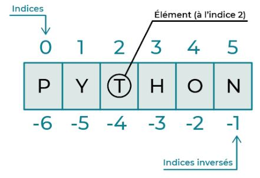

Initiation au langage Python
Contenu
Initiation au langage Python¶
Kenitra, Janvier 2024¶
Remarque
Version de Janvier 2024. En cours d’amélioration (à ne pas diffuser!)
Support du cours d’Informatique, distribué gratuitement. Merci de signaler les erreurs éventuelles
1. Python¶
1.1. C’est quoi Python ?¶
Python
Python est un langage de programmation de haut niveau (high-level programming language), avec des applications dans de nombreux domaines, notamment :
La programmation Web;
Le calcul scientifique;
Le gaming
L’intelligence artificielle !
Le language Python
Le langage Python est un de langage Interprété et dynamique. Il support la programmation orienté objet et il est ineffaçable avec plusieurs autres langages de programmation. L’un des plus grands avantages de Python est sa lisibilité, la simplicité de sa syntaxe et une large communauté qui est derrière son développement.
1.2. Pourquoi devriez-vous apprendre Python ?¶
Choix de python
Apprendre Python offre de nombreux avantages en raison de ses caractéristiques et de sa polyvalence.
Multiplateforme (Windows, Linux, MacOs,…etc.)

Simplicité et sa synthaxe et proche de la langue anglaise

Eco-système riche et complet

Open source et gratuit
Cela signifie que vous pouvez utiliser, modifier et distribuer le langage Python sans frais. La nature open source de Python favorise la collaboration, l’innovation et la création de nombreuses bibliothèques et frameworks qui enrichissent l’écosystème Python
Un des languages les plus populaires

Traitement de données et analyse
Python est très populaire et utilisé par des organisations telles que Google, la NASA, la CIA, Disney..etc.
Le présent chapitre introduit les éléments de base da la programmation sous Python. Il introduit les grandes caractéristiques du langage Python en mettant l’accent sur :
Les opérations arithmétique en Python
Affectation et variables
Types de données de base dans Python
Opérateurs logiques et relationnels
Affichage Lecture d’informations
2. Premier contact¶
Commençons par créer un programme court qui affiche la fameuse phrase « Hello world! ». En Python, on utilise la fonction print pour afficher du texte comme output
print("Hello world!")
Hello world!
3. Manipulation de chaînes de caractères¶
On peut créer une chaîne de caractères en mettant entre guillemets le contenu de la variable et en utilisant le signe égal (=). Il est à noter qu’une chaîne de caractères est une classe d’objets qui consiste en une série de caractères
print("Bonjour Adam!")
print('Bonjour Adam!')
3.1. Concaténer¶
Concaténer Ce terme signifie “joindre des chaînes de caractères”. Ce processus est appelé la concaténation de chaînes, et s’effectue en utilisant l’opérateur plus (+).
print("Bonjour"+"Adam!")
BonjourAdam!
Notez qu’il vous faut indiquer explicitement là où vous voulez que des espaces apparaissent, en les mettant eux aussi entre des guillemets simples.
print("Bonjour "+"Adam!")
print("Bonjour"+" Adam!")
print("Bonjour"+" "+"Adam!")
Bonjour Adam!
Bonjour Adam!
Bonjour Adam!
3.2. Multiplier¶
Si vous voulez plusieurs copies d’une chaîne de caractères, utilisez l’opérateur de la multiplication (*).
print('bonjour ' * 3)
bonjour bonjour bonjour
3.3. longueur¶
Vous pouvez déterminer le nombre de caractères contenus dans une chaîne de caractères à l’aide de len. Notez que l’espace blanc compte comme un caractère séparé.
print(len("bonjour Adam!"))
13
3.4. Minuscules/majuscules¶
Il est parfois utile de convertir une chaîne de caractères en minuscules .lower() ou majuscules .upper() . Par exemple, il est plus facile pour l’ordinateur de reconnaître que “Bonjour” et “bonjour” sont le même mot si nous standardisons les casses au préalable.
message = "BONJOUR LE MONDE"
message1 = message.lower()
print(message1)
bonjour le monde
message = "bonjour le monde"
message2 = message.upper()
print(message2)
BONJOUR LE MONDE
3.5. Couper¶
Si vous voulez couper les parties non désirées au début ou à la fin d’une chaîne de caractères, vous pouvez le faire en créant une nouvelle chaîne à l’aide de l’opérateur :.
message = "Python est un langage de programmation interprété"
message1= message[0:20]
print(message1)
Python est un langag
3.6. Remplacer¶
Si vous avez besoin de remplacer une sous-chaîne à l’intérieur d’une chaîne, vous pouvez le faire avec la méthode replace.
message = "Python est un langage de programmation interprété"
message1= message.replace("programmation" , "code")
print(message1)
Python est un langage de code interprété
4. Les opérations arithmétiques en Python¶
Dans sa forme la plus élémentaire, Python peut être utilisé tout simplement comme une calculatrice. Il peut réaliser les opérations arithmétiques suivantes :
Addition :
+Soustraction :
-Multiplication :
*Division entière :
//Division :
/Exponentiation :
**Modulo :
%
On rappelle que la division entière renvoi le quotient de la division euclidienne et le modulo renvoie le reste de la division euclidienne. Par exemple 7 // 4 est 1; 7 % 4 est 3, 5//2 est 2; 5%2 est 1.
Commençons maintenant à programmer. Nous voulons calculer 1+5, 5-4, 4*3, (10+8)/3, 2**4, 28//6 et 28%6; Comme dans la plupart des langages de programmation, on utilise les symboles suivants pour les opérations mathématiques:
# addition
print(1+5)
# soustraction
print(5-4)
# multiplication
print(4*3)
# division
print((10+8)/3)
# exponentiation
print(2**4)
# division entière
print(28//6)
# modulo
print(28%6)
6
1
12
6.0
16
4
4
Note
Toute chose commençant par # est un commentaire, il sera ignoré par Python.
Les commentaires sont une bonne manière de savoir ce qu’on fait ou pour qu’une autre personne sache ce qu’on fait.
Les commentaires usuels:
# Ceci est un commentaire
Les commentaires en fin de ligne:
A = 7 # Ceci est un commentaire
En Python, comme dans de nombreux langages de programmation, les opérations mathématiques suivent l’ordre de priorité standard défini par les règles mathématiques. L’ordre d’exécution des opérations mathématiques est souvent mémorisé à l’aide de l’acronyme (Please Excuse My Dear Aunt Sally) PEMDAS, qui signifie :
P= Parentheses;
E= Exponents;
M= Multiplication;
D= Division;
A= Addition;
S= Substraction.
Exercice
Quelle est, selon vous, le résultat de ces opérations :
Verifier avec Python.
5. Assignation et variables¶
5.1. Variable¶
Une variable est concept fondamental en programmation. Elle permet de stocker une valeur (par exemple la valeur 2) ou un objet (par exemple une fonction, liste, tableau, vecteur, …). Cela permet de l’utiliser ultérieurement pour accéder facilement à la valeur ou à l’objet qui est stocké dans cette variable.
On affecte une valeur a une variable en utilisant le symbole =. Si vous voulez stocker la valeur 4 dans une variable nommée ma_valeur on peut faire comme suit :
# affecter la valeur 4 a la variable ma_valeur
ma_valeur = 4
# afficher le contenu de la variable ma_valeur
print(ma_valeur)
Affichage après exécution :
4
On peut faire toutes les opérations susmentionnées avec les variables à la place de valeurs. Voici un exemple : Dans une classe, le nombre des hommes est 10 le nombre des femmes est 18.
# Affecter le nombre des étudiants de sexe masculin à la variable hommes
hommes = 10
# Affecter le nombre des étudiants de sexe féminin à la variable femmes
femmes = 18
# Affecter le nombre total des étudiants à la variable total_etudiant
total_etudiant = hommes + femmes
# Afficher le nombre total d'étudiants
print(total_etudiant)
Affichage après exécution :
28
Python supporte les opérateurs d’affectation suivants : =, + =, – =, *=, /=, %=, **= et //=
Hormis le premier opérateur =, les autres opérateurs ont la même logique. Nous allons illustrer cette logique avec += et vous alles comprendre l’utilisation des autres.
Supposons que nous avons une variable (soit var) qui contient une valeur (soit, par exemple 2) et pour une raison (vous allez confronter plusieurs raisons dans la suite de ce cours) nous voulons que cette variable reçoive l’ancienne valeur (2) plus une nouvelle valeur (soit, par exemple 1). On peut faire ça avec l’opérateur = comme suit :
# la variable var contient la valeur 2
var = 2
# la variable var reçoit l'ancienne valeur plus 1
var = var +1
# afficher le contenu de la variable var
print(var)
Affichage après exécution :
3
On peut faire la même instruction avec l’opérateur += comme suit :
# la variable var contient la valeur 2
var = 2
# la variable var reçoit l'ancienne valeur plus 1
var += 1
# afficher le contenu de la variable var
print(var)
Affichage après exécution :
3
Avertissement
Sous Python, les noms de variables doivent en outre obéir à quelques règles simples :
Un nom de variable est une séquence de lettres (a → z, A → Z) et de chiffres (0 → 9), qui doit toujours commencer par une lettre.
Seules les lettres ordinaires sont autorisées. Les lettres accentuées, les cédilles, les espaces, les caractères spéciaux tels que $, #, @, etc. sont interdits, à l’exception du caractère _ (souligné).
Python est « case sensitive » (les caractères majuscules et minuscules sont distingués). Par exemple : Var1, var1, VAR1 sont donc des variables différentes.
il est interdit d’utiliser comme nom de variables les mots réservés a python. Ils sont : and, as, assert, break, class, continue, def, del, elif, else, except, False, finally, for, from, global, if, import, in, is, lambda, None, nonlocal, not, or, pass, raise, return, True, try, while, with, yield,
5.2 Types de variables¶
Il existe de nombreux types de données dans Python. Voici quelques-uns les plus basiques :
float: Les valeurs décimales (ou en virgule flottante) telles que 10,15 (attention en utilise.comme décimal au lieu de,).int(les nombres entiers) : les valeurs comme 8; 4; 10 sont des entiers (int). Les entiers font aussi partie des valeurs numériques.bool(les valeurs booléennes) :TrueouFalsesont dites valeurs logiques.str(les caractères, ou chaînes de caractères). Les guillemets « texte » (ou encore les apostrophes “texte”) indiquent que texte est de typestr.complex(les nombre complexes): sont les nombres contenant une partie réelle et une partie imaginaire. En mathématiques, on note le nombre complexe dans le carrée est égale à 1. Cependant, en Python, on utilise la lettrej(ouJ) pour indiquer ce nombre. Par exemple, si on voulait écrire le nombre 3+1.5i(le nombre complexe dont la partie réelle est 3 et la partie imaginaire est 1.5) en python on écrit 3 + 1.5j.None: type Le mot-clé None est utilisé pour définir une valeur nulle (pas 0), ou aucune valeur du tout. None n’est pas la même chose que 0,Falseou une chaîne vide “”. None est un type de données en soi (NoneType) et la seule valeur qui peut être de typeNoneest le mot-clé None.
si nous avons un variable (ou même une valeur) et nous voulons savoir son type de données, on utilise la fonction type. Il faut être prudent lorsqu’on voulait faire des opérations sur des variables si leur type n’est le même!
# cette instruction va afficher int
print(type(1))
# cette instruction va afficher float
print(type(1.5))
# cette instruction va afficher bool
print(type(True))
# cette instruction va afficher str
print(type("bonjour"))
# cette instruction va afficher complex
print(type(5+17.89j))
# cette instruction va afficher NoneType
print(type(None))
Affichage après exécution :
<class 'int'>
<class 'float'>
<class 'bool'>
<class 'str'>
<class 'complex'>
<class 'NoneType'>
5.3 Minimum et maximum¶
Python propose les fonctions min() et max() qui renvoient respectivement le minimum et le maximum de plusieurs entiers et /ou floats :
a = 6
b = 7
c= -5
d =min(a,b,c)
print(d)
a = 6
pi = 3.14
c =max(pi,a)
print(c)
7. Liste¶
7.1. Création¶
Sous Python, on peut aussi définir une liste comme une collection d’éléments séparés par des virgules, l’ensemble étant enfermé dans des crochets [ ].
Les éléments de la liste peuvent être de n’importe quel type. Voici un exemple d’un liste en python :
jour_et_nombre = ['lundi', 'mardi', 'mercredi', 'jeudi', 'vendredi', 'samedi', 'dimanche', 0, 1, 5]
print(jour_et_nombre)
Affichage après exécution :
['lundi', 'mardi', 'mercredi', 'jeudi', 'vendredi', 'samedi', 'dimanche', 0, 1, 5]
Lorsqu’on dit que les éléments d’une liste peuvent contenir n’importe quel type, on ne rigole pas !! Voici une illustration :
# on peut avoir une liste contenant des listes comme des éléments
# une première liste
list1 = [1, 3, 'bonjour']
# une deuxième liste
list2 = [None, True, 3+2j, '']
# une troisième liste contenante list1 et list2 comme éléments
list3 = [list1, list2]
# une quatrième liste contenante list1, list2, et list3 comme éléments
list4 = [list1, list2, list3]
# afficher les listes
print(list1)
print(list2)
print(list3)
print(list4)
Affichage après exécution :
[1, 3, 'bonjour']
[None, True, (3+2j), '']
[[1, 3, 'bonjour'], [None, True, (3+2j), '']]
[[1, 3, 'bonjour'], [None, True, (3+2j), ''], [[1, 3, 'bonjour'], [None, True, (3+2j), '']]]
7.2. Opérations sur les listes¶
7.2.1 La fonction len()¶
La fonction intégrée len(), que nous avons déjà rencontrée à propos des chaînes, s’applique aussi aux listes. Elle renvoie le nombre d’éléments présents dans la liste :
list1 = [1, 3, 'bonjour']
print(len(list1))
7.2.2 La fonction type()¶
#
jour_et_nombre = ['lundi', 'mardi', 'mercredi', 'jeudi', 'vendredi', 'samedi', 'dimanche', 0, 1, 5]
#
print(type(jour_et_nombre))
Affichage après exécution :
['lundi', 'mardi', 'mercredi', 'jeudi', 'vendredi', 'samedi', 'dimanche', 0, 1, 5]
<class 'list'>
7.2.3 La fonction range()¶
Si vous avez besoin de créer sur une suite d’entiers, vous pouvez utiliser la fonction list(range()). Elle génère une suite arithmétique.
syntaxe = range(aleur_initiale, borne_de_fin, pas)
a= list(range(10))
print(a)
Affichage après exécution :
[0, 1, 2, 3, 4, 5, 6, 7, 8, 9]
Il ) noter qu’il est possible de faire commencer l’intervalle à un autre nombre, ou de spécifier un incrément différent (même négatif) :
b= list(range(1, 100, 4))
print(b)
Affichage après exécution :
[1, 5, 9, 13, 17, 21, 25, 29, 33, 37, 41, 45, 49, 53, 57, 61, 65, 69, 73, 77, 81, 85, 89, 93, 97]
Exercice
Créer une liste contenant les entiers allant de 1997 à 2024.
Exercice
Créer une liste contenant les entiers impairs inférieur à 20.
Exercice
Créer une liste contenant les entiers pairs inférieurs ou égale à 20.
7.2.4 La fonction append()¶
Il est également possible d’ajouter un élément à une liste, à l’aide de la fonction append()
liste = ['samedi', 'dimanche', 0, 1, 5]
liste.append("lundi")
print(liste)
7.2.5 Indiçage négatif¶
Une liste peut être indexée avec des nombres positifs et/ou négatifs.
Pour les indices positifs, on commence par 0.
Pour les indices négatifs, on commeence par -1. Les indices négatifs reviennent à compter à partir de la fin

7.2.6 la fonction del()¶
C’est une fonction intégrée permet de supprimer d’une liste un élément quelconque (à partir de son index).
liste = ['samedi', 'dimanche', 0, 1, 5]
del(liste[2])
print(liste)
7.2.7 Tranches¶
7.2.8 Minimum, maximum et somme¶
Exercice
Constituez une liste année contenant les 12 mois de l’année.
À partir de cette liste, comment récupérez-vous seulement les 3 premiers mois de l’année d’une part, et le reste d’autre part ? Utilisez pour cela l’indiçage.
Cherchez un autre moyen pour arriver au même résultat (en utilisant un autre indiçage).
Trouvez deux manières pour accéder au dernier mois de l’année.
Inversez les mois de l’année en une commande.
7.3. Exercices d’application¶
Exercice
Écrire un programme qui, à partir de la saisie d’un côté c, calcule l’aire d’un carrée.
Exercice
Écrire un programme qui, à partir de la saisie d’un Longueur (L) et un largeur (l), calcule l’aire d’un rectangle.
Exercice
Écrire un programme qui, à partir de la saisie d’une base (b) et un hauteur (h), calcule l’aire d’un triangle.
Exercice
Écrire un programme qui, à partir de la saisie d’un rayon et d’une hauteur, calcule le volume d’un cône droit.
8. Opérateurs logiques et relationnels¶
8.1 Opérateurs logiques¶
En python, il existe trois opérateurs logiques : or qui signifie ou, and qui signifie et, et not qui signifie non.
Pour mieux illustrer ces opérations, soient var1= True et var2 = False. Quel serait le résultat des instructions suivantes :
var1 or var2var1 and var2not var1(var1 and var2) or (not var2)
# initialiser les deux variables
var1 = True; var2 = False # remarquer qu'on peut faire plusieurs instructions dans une même linge. Cependant, il est déconseillé
#
print(var1 or var2)
#
print(var1 and var2)
#
print(not var1)
#
print((var1 and var2) or (not var2))
Affichage après exécution :
True
False
False
True
8.2. Opérateurs relationnels (tests)¶
En python, il existe six opérateurs relationnels :
<qui permet de tester si une valeur et strictement inférieure à une autre ;<=qui permet de tester si une valeur et inférieure ou égale à une autre ;>qui permet de tester si une valeur et strictement supérieure à une autre ;>=qui permet de tester si une valeur et supérieure ou égale à une autre ;!=ou<>qui permet de tester si une valeur est égale a une autre;et
==qui permet de tester l’égalité de deux valeurs.
Soient var1 = 5, var2 = 2+3, var3 = 6, var4 = "bonjour", var5 = True. Quel serait le résultat des instructions suivantes :
var1 == var2;var2 != var4;var3 > var1+ var2;var3< var1 + var2;
#
var1 = 5; var2 = 2+3; var3 = 6; var4 = "bonjour"; var5 = True
#
print(var1 == var2)
#
print(var1 != var4)
#
print(var3 > var1 + var2)
#
print(var3 < var1 + var2)
Affichage après exécution :
True
True
False
True
9. Lecture d’informations au clavier¶
Parfois, on est amené a ce que notre programme dépend d’intervention de l’utilisateur (entrée d’un paramètre, clic de souris sur un bouton, etc.). Dans un programme simple, on utilise la fonction input. Cette fonction invite l’utilisateur à entrer des données au clavier puis taper <entrer>. Lorsque le programme est exécuté, une case apparait à l’utilisateur pour entrer ces donner. Puis le programme continue à s’exécuter pour rendre un output. Les données entrées par l’utilisateur peuvent être stockées dans une variable. Il est à noter que cette variable sera de type str. Donc, si l’on veut des données numériques par exemple, on doit convertir cette variable au type de donne que nous souhaitons. Enfin, on peut y mettre comme argument un texte qui oriente à l’utilisateur lors de l’entrée des données. Voici un exemple dont on demande à l’utilisateur d’entrer son nom.
x = input()
print(x)
Le type de la variable qui stocke le contenu de input est toujours str:
x = input("merci d'entrer un chiffre: ")
print(type(x))
<class 'str'>
10. Convertir les types de données¶
Il existe plusieurs raisons pour lesquelles nous somme devant l’obligation de convertir les types de données (une raison est celle de input que nous avons vu). Les fonctions qui servent à la conversion entre les types de données sont les suivantes :
int(): pour convertir un type de données en entier;float(): pour convertir un type de données en virgule flottante.str(): pour convertir un types de donnes en chaine de caractères;et
bool(): pour convertir les types de donnes en valeurs booléennes.
Les types de données int et float peuvent être convertis en tous autre type de données. La seule remarque est que la conversion d’une valeur de type float en int rend les chiffres avant la virgule (1.9 devient 1 après conversion). Pour avoir l’entier le plus proche au nombre que nous voulons convertir, nous devons utiliser la fonction round().
11. Exercices d’application¶
Exercice
Écrivez un programme en Python qui demande à l’utilisateur d’entrer son âge. En utilisant cette information, le programme doit calculer et afficher la date de naissance présumée de l’utilisateur.
Exercice
Ecrire un petit programme qui permet de demander à l’utilisateur d’entrer son nom, son poids en kilogramme (sans entrer l’unité), et sa taille en mètre (sans entrer l’unité). Puis il affiche l’indice du poids Body mass index (BMI) :
Indication : Formule du BMI :